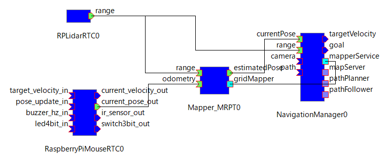
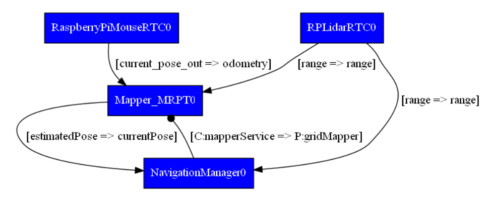
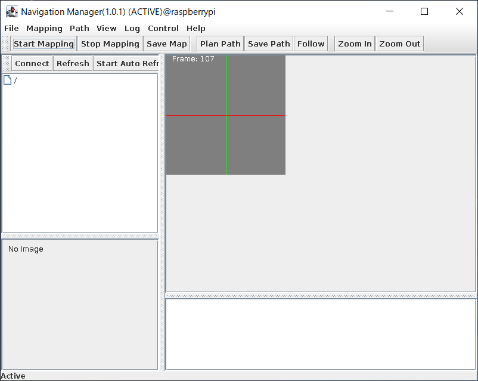
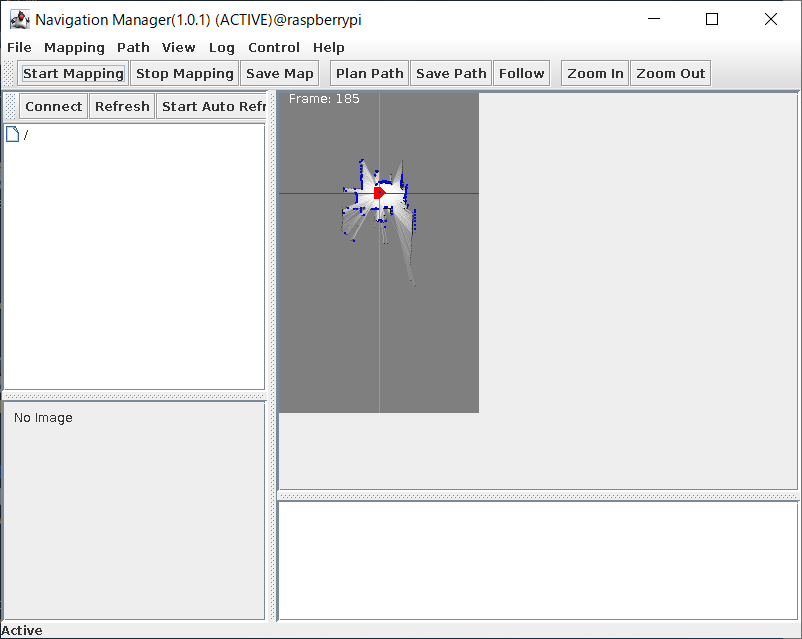
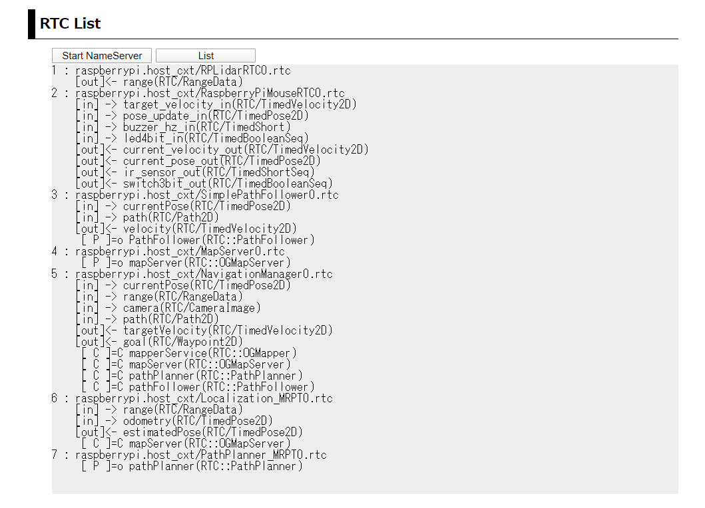

Raspberry Pi Mouse ROSConJP2019講習会キット¶
この文書について¶
この文章は、レーザ測域センサ付き小型移動ロボット（株式会社アールティ製 Raspberry Pi Mouse ROSConJP2019講習会キット：以下RasPiMouse2019）に OpenRTM-aist-1.2.1及び移動ロボットナビゲーション RTコンポーネントをインストールし、ナビゲーション用地図の生成、 地図上の指定した地点へのナビゲーションを実行するシステムを導入し、 RTミドルウェア講習会のための教材セットを作成すること目的としています。
raspbian_setup
対象RTコンポーネントのバイナリパッケージのインストール¶
- tocdepth
2
OpenRTM-aist-1.2.1-Releaseのインストール¶
OpenRTM-aistのオフィシャルサイト から「一括インストールスクリプト(pkg_install_raspbian.sh)」をダウンロードし、インストールを行います。
下記のコマンドを実行してください。 OpenRTM-aist-1.2.1-Release のC++版、Python版(Python2.7)、Java版及びOpenRTP, Rtshellがインストールされます。
$ wget https://raw.githubusercontent.com/OpenRTM/OpenRTM-aist/master/scripts/pkg_install_raspbian.sh
$ sudo sh ./pkg_install_raspbian.sh -l all --yes
OpenRTM-aist-1.2.1-ReleaseのJava版では、OpenJDK-8が必要となりますが、 上記の一括インストールスクリプトでは、openjdk-8はインストールされませんので、 別途インストールが必要です。
Raspbian Butterでは、openjdk-8のパッケージが提供されていますので、 下記のコマンドでインストールし、デフォルトの設定をopenjdk-8に変更してください。
$ sudo apt-get install openjdk-8-jdk
$ sudo update-alternatives --config java
選択肢 パス 優先度 状態
------------------------------------------------------------
* 0 /usr/lib/jvm/java-11-openjdk-amd64/bin/java 1111 自動モード
1 /usr/lib/jvm/java-11-openjdk-amd64/bin/java 1111 手動モード
2 /usr/lib/jvm/java-8-openjdk-amd64/jre/bin/java 1081 手動モード
現在の選択 [*] を保持するには <Enter>、さもなければ選択肢の番号のキーを押してください: 2
update-alternatives: /usr/bin/java (java) を提供するためにマニュアルモードで /usr/lib/jvm/java-8-openjdk-amd64/jre/bin/java を使います
以上で、OpenRTM-aist-1.2.1-Releaseのインストールは終了です。
rplidar_sdkのインストール¶
次に、RasPiMouse2019に搭載さているレーザー距離センサを利用するためのライブラリ rplidar_sdkをインストールします。
rplidar_sdkは、Github に公開されていますので、ダウンロードしインストールします。 下記のコマンドでライブラリをビルドしてください。
$ cd ~/src
$ git clone https://github.com/hara-jp/rplidar_sdk
$ cd ~/src/rplidar_sdk/sdk
$ make
上記のビルドが成功すれば、 sdk/output/Linux/Release にライブラリ librplidar_sdk.a が生成されているはずですので確認してください。
次に、ビルドしたライブラリおよびヘッダーファイル、 cmakeファイルを下記のコマンドでインストールしてください。
$ sudo make install
上記のコマンドの実行後には /usr/local/rplidar_sdk にライブラリ、ヘッダーなどがインストールされています。
また、RPLidarはUSBシリアルを使用します。 通常、USBシリアルのデバイスファイルへのアクセスは、管理者権限のみに限られています。 そのため、USBシリアルデバイスファイル（/dev/ttyUSB0）をユーザ権限でアクセスするために udev（/lib/udev/rules.d/50-udev-default.rules）の設定を変更します。
/lib/udev/rules.d/50-udev-default.rules
の最下部から2行目に下記の一行を追記してください。
KERNEL=="ttyUSB[0-9]*", MODE="0666"
以上で、udevの設定は終了です。 再起動後には、"/dev/tyyUSB*" のファイルがユーザ権限で利用可能です。
MRPTのインストール¶
移動ロボットのナビゲーションを行うRTC群は、MRPT(Mobile Robot Programing Toolkit)を利用し、 ナビゲーション用の地図の作成や目的地への経路計画などを行っています。 RasPiMouse2019で使用しているRaspbianには、このMRPTライブラリ(libmrpt)の パッケージが用意されていますので、libmrptをインストールします。
libmrptは、下記のようにaptコマンドでインストールすることができます。
$ sudo apt-get install libmrpt-dev
ナビゲーションRTC群のパッケージインストール¶
次に、RasPiMouse2019のナビゲーションのためのRTC群のパッケージを Github からダウンロードしてください。
このパッケージには、ナビゲーションRTC群(debファイル)、 ナビゲーション実行のための設定、起動ファイル群(openrtm.tgz)、 RTC群、ネームサーバの起動、終了等のためのWebコンテンツ及びCGIスクリプト(web.tgz) が含まれています。
パッケージをダウンロード後、下記のコマンドで展開してください。
$ cd ~/
$ wget https://github.com/hara-jp/RasPiMouse2019-OpenRTM/blob/master/pkgs.tgz?raw=true -O pkgs.tgz
$ tar xzvf pkgs.tgz
ナビゲーションRTC群は、dpkgコマンドでインストールすることができますので、 下記のコマンドでインストールしてください。
$ cd ~/pkgs
$ sudo dpkg -i *.deb
これでナビゲーションRTC群は、/usr/share/openrtm-1.2/components の下にインストールされます。
ナビゲーションRTC群の起動・設定ファイル群のインストール¶
次に、RasPiMouse2019でナビゲーションRTC群の設定、起動スクリプトの ファイル群を展開します。 前述しましたが、設定、起動ファイル群は openrtm.tgz になりますので、 下記のコマンドで /usr/local の下に展開してください。
$ cd ~/pkgs
$ sudo tar xzvf openrtm.tgz -C /usr/local
ナビゲーションRTC群操作用のWebインターフェースのインストール¶
最後に、ナビゲーションRTC群を制御するためのWebコンテンツ及びCGIのファイル群(www.tgz) を展開します。
下記のコマンドでファイル群をインストールしてください。
$ cd ~/pkgs
$ sudo tar xzvf www.tgz -C /var
以上でナビゲーションRTC群のバイナリ、設定ファイル群のインストールは終了です。
RasPiMouse2019のローカルネットワーク設定¶
- tocdepth
2
RaspberryPiMouseの無線LANのアクセスポイント化¶
RasPiMouse2019を使用する場合、無線LANを外部ネットワークに接続して 使用しても良いのですが、複数のRasPiMouse2019で講習会を行うことを 想定すると個々のRasPiMouse2019の無線LANをアクセスポイント化し クライアントPCとダイレクト接続して利用する方が便利です。
そこで、ここではRasPiMouse2019の無線LANをアクセスポイント化について 説明します。
RasPiMouse2019の無線LANのアクセスポイント化には、hostapdとdnsmasq というソフトウェアが が必要になります。 下記のようにapt-getコマンドでインストールしてください。
$ sudo apt-get install hostapd dnsmasq
次に、hostaptdとdnsmasqの設定を行います。 hostapdの設定を行うために、/etc/hostapd/hostapd.conf を下のような内容で作成してください。
interface=wlan0
driver=nl80211
ssid=<SSID>
hw_mode=g
channel=4
wmm_enabled=0
macaddr_acl=0
auth_algs=1
wpa=2
wpa_key_mgmt=WPA-PSK
rsn_pairwise=CCMP
wpa_passphrase=<PASSWORD>
上記のファイル内容で <SSID> 及び <PASSWORD> は、RasPiMouse2019は 個々の機体ごとに任意の文字列で設定してください。(ただし、<PASSWORD>は8文字以上にしてください)
次にRasPiMouse2019の機体のIPアドレスを固定アドレスで運用できるように設定します。 Raspbian Busterでは、dhcpcdというDHCPクライアントによって各ネットワークデバイス IPアドレスを設定しています。 dhcpcdの設定ファイルは /etc/dhcpcd.conf になりますので、 このファイルに下記のように固定アドレスの設定を追記してください。
....
....
interface wlan0
static ip_address=192.168.11.1/24
static routers=192.168.11.1
static domain_name_servers=192.168.11.1 8.8.8.8
nohook wpa_supplicant
ここでは、RasPiMouse2019の無線LANのIPアドレスを 192.168.11.1/24 という プライベートアドレスに設定しています。 また、Raspbian Busterの dhcpcdでは、無線LANのネットワークデバイスの設定 には、wpa_supplicantというマネージャーを自動起動してしまいます。 そのため、無線LANアクセスポイントを利用する場合には、wpa_supplicantの起動を 抑制するために "nohook wpa_supplicant" を末尾に追加しています。
ただし、このwpa_suplicantの自動起動機能の抑制は、全ての無線LAN機器に 対して有効になりますので、他のUSBの無線LANを付けてもwap_supplicantが 機能せず、無線LANの自動接続しませんので注意してください。
次に、無線LANアクセスポイントに接続するクライアントPCへIPアドレスを割り当てる DHCPサーバー機能を有効にします。
DHCPサーバーとして使用する dnsmasq の設定ファイルは、/etc/dnsmasq.conf にありますので、 下記の内容を追記してください。
no-resolv
no-poll
dhcp-range=192.168.11.10,192.168.11.20,12h
server=192.168.11.1
ここでは、クライアントPCに配布するIDアドレスとして、192.168.11.10～192.168.11.20の 11個のアドレスに設定しており、そのリース期間は12時間になっています。 また、dhcpサーバーとして機能するIPアドレスは、192.168.11.1になっています。
上記の3つのファイルの追加・修正で内蔵無線LANデバイスのアクセスポイント化の設定は 終了ですが、hostapdがsystemdで起動できない状態のママになっています。
そこで下記のコマンドを実行して、hostapdを起動時に自動実行するように設定してください。
$ sudo systemctl unmask hostapd
$ sudo systemctl enable hostapd
最後に、Java版の外部からのアクセスを有効にするために、/etc/hostsを変更します。 Raspbian Buster の初期設定では、ホスト名である "raspberrypi" のIPアドレスの設定が、
127.0.1.1 raspberrypi
と記載されています。 このままでは、Java版のRTCに外部のPCからアクセスすることができません。
したがって、上記の部分を下のように修正してください。
192.168.11.1 raspberrypi
以上で、RasPiMouse2019の内蔵無線LANデバイスをアクセスポイント化することができましたので、 再起動を実施てアクセスポイントになっていることを確認してください。
Webサーバーのセットアップ¶
RasPiMouse2019では、CGIを経由して外部PC上のWebブラウザから ネームサーバの起動、RTC群の制御を行うことができます。
この節では、CGIを利用するためにapache2を導入と設定を行っていきます。 まずは、下記のコマンドを実行してapache2のインストールとCGIの有効化を実行してください。
$ sudo apt-get install apache2
$ sudo ln -s /etc/apache2/mods-available/cgi.load /etc/apache2/mods-enabled/cgi.load
次に、CGIの設定をファイルの指定のために、 apache2のデフォルト設定ファイルを下のように修正します。
/etc/apache2/sites-available/000-default.conf をエディタで開き、 28行目にある下記の行のコメントをはずします。
Include conf-available/serve-cgi-bin.conf
次に、CGIプログラムとしてPythonプログラムファイルを使うためにMIME設定を変更します。
/etc/apache2/mods-available/mime.conf のファイルの219行目にある 下記の行のコメントをはずし '.py'を追加します。
AddHandler cgi-script .cgi .py
最後に、CGIプログラムを配置する場所を /var/www/cgi-bin に変更します。 /etc/apache2/conf-available/serve-cgi-bin.conf の11行目と12行目に記載されている CGIプログラムの設置場所を下記のように変更してください。
ScriptAlias /cgi-bin/ /var/www/cgi-bin
<Directory "/var/www/cgi-bin">
以上で、apache2のインストールとCGIの設定は終了です。 apache2を再起動するために下記のコマンドを実行してください。
$ sudo service apache2 restart
クライアント用PCの設定¶
RasPiMouse2019のナビゲーションRTC群の中でNavigationManagerは、Javaで実装され GUIパネルを含んでいます。
そのため RasPiMouse2019上でNavigationManagerを動作させるには、 クライアントPCにX-WindowのXサーバーが必要になります。 Linux端末等UNIX系OSには、GUIシステムとしてXだサーバが利用されていますが、 Windows10などのMicrosoftのOSには、Xサーバーを別途インストールする必要があります。
Windows上で実行可能なXサーバーとして、 有償のX410 または VcXsrv がありますので、どちらのアプリケーションをインストールしてください。
RTコンポーネントの起動方法¶
- tocdepth
2
ここでは、RasPiMouse2019を操作するRTC群の起動方法について説明します。 RasPiMouse2019のナビゲーションのためのRTC群の操作は、 sshでログインしてターミナル上で起動、接続、有効化等の操作を行うことも 可能ですが、ナビゲーションRTC群の基本操作は Webブラウザを介して 実行することができます。 ここでは、最初にWebブラウザを用いた操作について説明し、次にターミナルから ログインして操作する方法について解説します。
Webブラウザを用いたRTCの起動¶
RasPiMouse2019の電源と投入し、Raspbian を起動させます。 クライアントPCの無線LANのマネージャーからhostapd.confで設定したssidが 見えることを確認し、接続してください。
WindowsPCの場合には、タスクバーの右側のWifiの設定から接続することができます。 接続時には、パスワードを入力する必要がありますので、hostapd.confに記載した passwordを入力してください。
正常に接続できれば、192.168.11.XX というIPアドレスが設定されているはずですので、 ipconfigコマンド等で確認してください。
IPアドレスの確認終了後、RasPiMouse2019（IPアドレス: 192.168.11.1）に Webブラウザから接続してください。 下のようなページが出力されれば正常に動作しています。

ネームサーバーの起動¶
起動直後ではネームサーバーが動作していないため、2段目の "RTC LIST"の部分は、 下のようなエラー表示になっています。

ナビゲーションRTC群を含むOpenRTM-aistをベースとしたRTコンポーネントでは、 ネームサーバーが必要なため、「Start NameServer」ボタンをクリックして起動してください。
ボタンをクリック後は、起動メッセージのページに移行し、3秒後にトップページに移動します。 移動後、しばらくすれば "RTC LIST"の部分が下記のようになります。

このようにエラーメッセージが表示されない場合は、ネームサーバが正常に動作しています。
ナビゲーションRTC群の操作¶
トップページの最初のセクションには、下図のように RasPiMouse2019のナビゲーションに用いるRTCの名称および 操作のCGIプログラムへのリンクの一覧が表示されています。

ここのRTCの起動、終了、アクティベート、デアクティベートをこれらのリンクを押下することで 操作することができます。
各RTCの起動後は、第2セクションの "RTC List" にある「List」ボタンを押下することで、 ネームサーバーに登録されているRTCの一覧を更新、表示することができます。
コマンドラインからRTCの起動¶
Webブラウザからでは、現在、個々のRTCの起動、終了、アクティベート、デアクティベートに対応していますが、 RTCの強制終了やエラー時の対応など細かい操作を行うことができません。
RTCの強制終了やエラー時の対応など細かい操作が必要な場合には、 クライアントPCのターミナルからssh経由でログインしてコマンドラインのオペレーションを実行してください。
WindowsPCからのsshによるアクセスは、 TaraTerm や PuTTY , mintty 等のターミナルエミュレータを利用してください。 各ソフトウェアの詳細は、それぞれのプロジェクトページを参照してください。
RasPiMouse2019へsshでログイン後は、rtshell等を使用してエラーの回復や 各RTCのプロセスの強制終了等を行うことができます。
また、ナビゲーションRTCの設定ファイルや起動スクリプトは、/usr/local/openrtm の下に配置されています。 RTCの個別起動は、/usr/local/openrtm/bin/<RTC名>.sh というファイル名で作成されており、 各RTCの設定ファイルは、/usr/local/openrtm/etc/<RTC名>.conf として配置されています。
後述するマップ作成(Mapper)、位置検出(localize)、経路生成(path_plan)のシステム制御用 スクリプトは、/usr/lcoal/openrtm の下に、mapper.sh, localize.sh, path_plan.sh として 配置されています。
これらのシステム制御用のスクリプトは、第2引数として start, stop, connect, disconnect, activate, deactivate のコマンドを指定することで制御すると都ができます。
例えば、マップ作成のシステムを開始するには、事前にクライアントPCでXサーバーを起動後、
$ export DISPLAY=<クライアントPCのIPアドレス>:0.0
$ /usr/local/openrtm/mapper.sh start
$ /usr/local/openrtm/mapper.sh connect
$ /usr/local/openrtm/mapper.sh activate
によって各RTCの起動、ポートの接続、アクティベートを行うことができます。 なお、最初のコマンドは、NavigationManagerのGUIパネルを表示させるための設定です。
また、終了時には下記のコマンドでRTCを終了させることができます。
$ /usr/local/openrtm/mapper.sh deactivate
$ /usr/local/openrtm/mapper.sh stop
RTコンポーネントの自動起動の設定について¶
RTコンポーネントの自動起動に関してなのですが、以前のRaspbianでは /etc/rc.local の中に起動起動スクリプトを記載することで実行することができました。
しかしながら現在のRaspbian Busterでは、 OS起動時にの自動実行プロセスは systemd により制御されており、 /etc/systemd/system の下にプロセス起動の設定ファイルを配置し、 systemctl コマンドで有効化を行うことで実現することができます。
しかしながら、RTCではネームサーバーが必要であるが、 omniorb4-nameserverのサービスが正常に動作しないという事例が報告されています。 これは、omniNamesの起動時に、/var/lib/omniorb/omninames-raspberrypi.[log, dat] などのファイルが残っていると起動に失敗する場合があるからです。 したがって、omniorb-nameserverの起動前に上記のファイルを削除するサービスをインストールすれば 解決可能です。
例えば、まず、下記の内容の /usr/local/openrtm/remove-nameserver-logs.sh というスクリプトを作成します。
#/bin/bash
/bin/rm -f /var/lib/omniorb/omninames-raspberrypi.*
次に、下記の内容のサービス設定ファイル /etc/systemd/system/clear_omniname_logs.service
[Unit]
Description=Remove log and dat of omniorb4-nameserver
Before=omniorb4-nameserver.service
[Service]
Type=oneshot
ExecStart=/usr/bin/sudo /usr/local/openrtm/remove-nameserver-logs.sh
[Install]
WantedBy=multi-user.target
を作成し、下記のコマンドでインストールしてください。
$ sudo systemctl enable clear_omniname_logs.service
この設定で、omniNamesの自動起動は可能ですが、外部のクライアントPC上のopenrtp等のツールから アクセスできない場合があります。 そのため、omniNamesの起動スクリプトである /etc/init.d/omniorb4-nameserver の33行目の部分に "-ORBendPointPublish giop:tcp:192.168.11.1:" を下記のように追記することで、外部からのアクセスが可能になります。
startcmd="start-stop-daemon --start --quiet --background --pidfile $PIDFILE --make-pidfile --exec $DAEMON -- -errlog $LOGFILE -ORBendPointPublish giop:tcp:192.168.11.1:"
ナビゲーションRTC群の自動起動については、 起動スクリプトにバックグラウンド処理で別のコマンドの呼出し等を行うと正常に動作しない場合がある ことが報告されているため、起動時にRTC群を自動起動することは推奨することができません。
そのため、前述のWebブラウザによるRTC及びRTCで構成されるシステムスクリプトを CGI経由で呼出し、実行させるようにしてください。
システム構成の実行方法¶
RasPiMouse2019をナビゲーションRTC群では、下記の3つのシステムを構成することができます。
Slamによるナビゲーション地図作成システム
Montecalo localiationによる自己位置同定システム
Path Plannerを用いた経路生成とナビゲーションシステム
ここでは、それぞれのシステムの起動、実行、終了の手順について解説を行っていきます。
ナビゲーション地図生成の実行¶
概要¶
このシステムでは、RasPiMouse2019に搭載しているLiDARからの情報をベースに slamによるナビゲーション地図の作成を行うシステムについて述べます。
このシステムでは、RaspberryPiMouseRTC, RPLidarRTC, Mapper_MRPT, NavigationManagerの4つのRTCを使用します。 また各RTC間の接続は、下図のようになります。
RTCの起動¶
RTCの起動は、Webブラウザを利用する場合には、トップページの第3セクション "Mapper"の部分を使用します。 ナビゲーションRTCのシステムに対しては、 下図のように「Start」、「Connect」、「Activate」、「Deactivate」、「Stop」の5つのオペレーションがあります。

ナビゲーション地図作成システムに必要なRTCの起動に「Start」を押下してください。 起動メッセージのページに遷移後、3秒後に自動でトップページに戻ります。
トップページに移行後、第2セクションの "RTC List" には、現在起動中のRTCの一覧が 表示されますが、RTCによって起動時間が異なりますので、全てのRTCが起動完了するまで しばらくお待ちください。
NavigationManagerはGUIを伴いますので、おそらく一番最後に起動すると思います。 全てのRTCが起動すると、下図のようなNavigationManagerの操作パネルが表示されます。

また、第2セクションの「List」を押下すると下図のようにRTCのリストが表示されます。

Webブラウザを使用せずに、ターミナルでRasPiMouse2019にログインする場合には、 下記のコマンドを入力すると上記と同じ結果が得らえます。
$ /usr/local/openrtm/bin/mapper.sh start
ナビゲーション地図生成構築（ポートの接続）¶
必要なRTCの起動後は、ナビゲーション地図作成システムを構成するために、 各RTCのポートの接続を行います。 最終的なシステム構成は、概要で表示した図の通りになります。 この構成を外部のRT System Editorを使って手動で接続しても良いのですが、 第3セクションの「Connect」ボタンを押下することで必要な接続を行うことができます。
ポートの接続後、第2セクションの「List」を押下すると下図のようなリストが得られます。

また、rtcmd を用いて graphコマンドを実行すると下図のようなシステム構成図を得ることができます。
また、Webブラウザを使用せずに、ターミナルでRasPiMouse2019にログインする場合には、 下記のコマンドを入力すると上記と同じ結果が得らえます。
$ /usr/local/openrtm/bin/mapper.sh connect
ナビゲーション地図生成の実行¶
RTCのポート接続が完了後、ナビゲーション地図作成を行います。 地図生成に係る4つのRTCをアクティベートしてください。
RTCのアクティベート¶
アクティベートの方法は、 Webブラウザ、ターミナルでログイン後にコマンド入力、 クライアントPC上のopenrtp、rtcmd等の外部ツールのいづれかを使用してください。
ここでは、Webブラウザとターミナルでログイン後のコマンドライン入力の2つの方法を紹介します。
Webブラウザでは、第3セクションの「Activation」ボタンを押下することで全てのRTCをアクティベートすることができます。 ターミナルからのコマンドライン入力では、下記のコマンドで同様に全てのRTCをアクティベートすることが可能です。
$ /usr/local/openrtm/mapper.sh activate
すべてのRTCを有効化すると、下図のようにNavigationManagerの右側のペインに座標軸のみが表示された 空の地図が表示されます。
現在の設定では、10m x 10mの地図を作成することができます。 より広い地図を作成する必要がある場合には、/usr/local/openrtm/etc/Mapper_MRPT.confのパラメータを 変更してください。
ナビゲーション地図の作成¶
システムのRTCのアクティベーション後は、 ナビゲーション地図を作成するために NavigationManagerの上部にある 「Start Mapping」ボタンを押下してください。 これによって、下図のようにRasPiMouse2019のLidarの情報を元にナビゲーション地図作成が開始されます。

上図のようにナビゲーション地図作成が開始されれば、NavigationManagerのJoystickパネルを用いて 手動でRasPiMouse2019を移動させてください。
Joystickパネルによる操作¶
NavigationManagerのJoystickは、メニューの [Control] -> [Start Control]を選択することで、 下図のような接続ダイアログが表示されますので、「OK」ボタンで選択してください。

正常にポート接続が完了すれば下図のような仮想Joystickが表示されますので、 RasPiMouse2019を移動させ、ナビゲーション地図を完成させてください。

しばらくRasPiMouse2019を移動させると下図のようなナビゲーション地図が得られます。
ナビゲーション地図の保存¶
最後に作成したナビゲーション地図を保存します。 NavigationManagerの「Save Mapping」ボタンを押下してください。 ファイル名選択ダイアログが表示されますので、/usr/local/openrtm/testMap.png と いう名前で保存してください。
ここで保存したファイル名(testMap)は、 自己位置同定システムや経路生成システムで使用するMapServerのデフォルト値になっています。
ナビゲーション地図生成システムの終了¶
ナビゲーション地図の保存が終了後は、RTCの終了を行います。 RTCの終了はWebブラウザの第3セクションの「Stop」ボタンを押下するか、 ターミナルでログイン後に下記のコマンド入力を行うことで行ってください。
$ /usr/local/openrtm/bin/mapper.sh stop
上記の例では、「Disconnct」と「Deactivate」を使用しませんでしたが、 起動中のRTCをそのまま使い自己位置同定システム等を実行する場合には 適宜利用することができます。
ナビゲーション（自己位置同定）の実行¶
- tocdepth
2
概要¶
このシステムでは、前述のナビゲーション地図作成システムにより生成した 地図とRasPiMouse2019に搭載したLiDARの情報をもとにMontecarlo localization を行うシステムです。
NavigationManagerに搭載されたJoystickでRasPiMouse2019を操作しながら、 自己位置同定を行います。
このシステムでは、RaspberryPiMouseRTC, RPLidarRTC, Localization_MRPT, MapServer, NavigationManagerの5つのRTCを使用します。 また、各RTC間の接続は、下図のようになります。

RTCの起動¶
RTCの起動は、Webブラウザを利用する場合には、トップページの第4セクション "Localiation"の部分を使用します。 ナビゲーションRTCのシステムに対しては、 下図のように「Start」、「Connect」、「Activate」、「Deactivate」、「Stop」の5つのオペレーションがあります。

ナビゲーション(自己位置同定)システムに必要なRTCの起動に「Start」を押下してください。 起動メッセージのページに遷移後、3秒後に自動でトップページに戻ります。
トップページに移行後、第2セクションの "RTC List" には、現在起動中のRTCの一覧が 表示されますが、RTCによって起動時間が異なりますので、全てのRTCが起動完了するまで しばらくお待ちください。
NavigationManagerはGUIを伴いますので、おそらく一番最後に起動すると思います。 全てのRTCが起動すると、ナビゲーション地図作成システムと同様の NavigationManagerの操作パネルが表示されます。
また、第2セクションの「List」を押下すると下図のようにRTCのリストが表示されます。

Webブラウザを使用せずに、ターミナルでRasPiMouse2019にログインする場合には、 下記のコマンドを入力すると上記と同じ結果が得らえます。
$ /usr/local/openrtm/bin/location.sh start
ナビゲーション（自己位置同定）構築（ポートの接続）¶
必要なRTCの起動後は、ナビゲーション（自己位置同定）システムを構成するために、 各RTCのポートの接続を行います。 最終的なシステム構成は、概要で表示した図の通りになります。 この構成を外部のRT System Editorを使って手動で接続しても良いのですが、 第4セクションの「Connect」ボタンを押下することで必要な接続を行うことができます。
ポートの接続後、第2セクションの「List」を押下すると下図のようなリストが得られます。

また、rtcmdを用いて graphコマンドを実行すると下図のようなシステム構成図を得ることができます。

また、Webブラウザを使用せずに、ターミナルでRasPiMouse2019にログインする場合には、 下記のコマンドを入力すると上記と同じ結果が得らえます。
$ /usr/local/openrtm/bin/location.sh connect
ナビゲーション（自己位置同定）の実行¶
RTCのポート接続が完了後、ナビゲーション（自己位置同定）を行います。 本システムに係る5つのRTCをアクティベートしてください。
RTCのアクティベート¶
RTCのアクティベートの方法は、 Webブラウザ、ターミナルでログイン後にコマンド入力、 クライアントPC上のopenrtp、rtcmd等の外部ツールのいづれかを使用してください。
ここでは、Webブラウザとターミナルでログイン後のコマンドライン入力の2つの方法を紹介します。
Webブラウザでは、第4セクションの「Activation」ボタンを押下することで全てのRTCをアクティベートすることができます。 ターミナルからのコマンドライン入力では、下記のコマンドで同様に全てのRTCをアクティベートすることが可能です。
$ /usr/local/openrtm/localize.sh activate
すべてのRTCを有効化すると、下図のようにNavigationManagerの右側のペインにナビゲーション地図が表示され、 現在のRasPiMouse2019の位置が原点付近で探索され、表示されます。

現在のデフォルト設定では、/usr/local/openrtm/testMap.yamlを使用しますが、 他のナビゲーション地図を利用する場合には、 /usr/local/openrtm/etc/MapServer.confのパラメータを適宜修正してください。
Joystickパネルによる操作¶
ナビゲーション（自己位置同定）システムでは、NavigationManagerのJoystickパネルを用いて 手動でRasPiMouse2019を移動させることを想定しています。
NavigationManagerのJoystickは、メニューの [Control] -> [Start Control]を選択することで、 下図のような接続ダイアログが表示されますので、「OK」ボタンで選択してください。
正常にポート接続が完了すれば下図のような仮想Joystickが表示されますので、 RasPiMouse2019を移動させ、ナビゲーション地図上でRasPiMouse2019の自己位置が 推定されることを確認してください。
この自己位置推定では、オドメトリとLiDARの情報を使ってMontecarlo Localization を行っています。 そのため、車輪のスリップによりオドメトリ値が大きく異なる場合には、 正しく自己位置を推定することはできません。
車輪のスリップを極力抑えるように車輪のメンテナンスをしてください。
ナビゲーション（自己位置同定）システムの終了¶
ナビゲーション（自己位置同定）システムの終了は、 Webブラウザの第3セクションの「Stop」ボタンを押下するか、 ターミナルでログイン後に下記のコマンド入力を行うことで行ってください。
$ /usr/local/openrtm/bin/location.sh stop
上記の例では、「Disconnct」と「Deactivate」を使用しませんでしたが、 起動中のRTCをそのまま使い経路計画システム等を実行する場合には適宜利用する ことができます。
ナビゲーション（経路計画）の実行¶
概要¶
このシステムでは、前述のナビゲーション地図作成システムにより生成した 地図とRasPiMouse2019に搭載したLiDARの情報をもとにMontecarlo localization を行い、ナビゲーション地図上で指定した目的地までのナビゲーションを行うシステムです。
目的地は、NavigationManagerに表示されたナビゲーション地図上のポイントをクリックすることで、 位置と姿勢を入力することができます。
このシステムでは、RaspberryPiMouseRTC, RPLidarRTC, Localization_MRPT, PathPlanner_MRPT, SimplePathFollower, MapServer, NavigationManagerの7つのRTCを使用します。 また、各RTC間の接続は、下図のようになります。

RTCの起動¶
RTCの起動は、Webブラウザを利用する場合には、トップページの第5セクション "PathPlan"の部分を使用します。 ナビゲーションRTCのシステムに対しては、 下図のように「Start」、「Connect」、「Activate」、「Deactivate」、「Stop」の5つのオペレーションがあります。

ナビゲーション（経路計画）システムに必要なRTCの起動に「Start」を押下してください。 起動メッセージのページに遷移後、3秒後に自動でトップページに戻ります。
トップページに移行後、第2セクションの "RTC List" には、現在起動中のRTCの一覧が 表示されますが、RTCによって起動時間が異なりますので、全てのRTCが起動完了するまで しばらくお待ちください。
NavigationManagerはGUIを伴いますので、おそらく一番最後に起動すると思います。 全てのRTCが起動すると、ナビゲーション地図作成システムと同様の NavigationManagerの操作パネルが表示されます。
また、第2セクションの「List」を押下すると下図のようにRTCのリストが表示されます。
Webブラウザを使用せずに、ターミナルでRasPiMouse2019にログインする場合には、 下記のコマンドを入力すると上記と同じ結果が得らえます。
$ /usr/local/openrtm/bin/path_plan.sh start
ナビゲーション（経路計画）構築（ポートの接続）¶
必要なRTCの起動後は、ナビゲーション（経路計画）システムを構成するために、 各RTCのポートの接続を行います。 最終的なシステム構成は、概要で表示した図の通りになります。 この構成を外部のRT System Editorを使って手動で接続しても良いのですが、 第4セクションの「Connect」ボタンを押下することで必要な接続を行うことができます。
ポートの接続後、第2セクションの「List」を押下すると下図のようなリストが得られます。

また、rtcmdを用いて graphコマンドを実行すると下図のようなシステム構成図を得ることができます。

また、Webブラウザを使用せずに、ターミナルでRasPiMouse2019にログインする場合には、 下記のコマンドを入力すると上記と同じ結果が得らえます。
$ /usr/local/openrtm/bin/path_plan.sh connect
ナビゲーション（経路計画）の実行¶
RTCのポート接続が完了後、ナビゲーション（自己位置同定）を行います。 本システムに係る5つのRTCをアクティベートしてください。
RTCのアクティベート¶
RTCのアクティベートの方法は、 Webブラウザ、ターミナルでログイン後にコマンド入力、 クライアントPC上のopenrtp、rtcmd等の外部ツールのいづれかを使用してください。
ここでは、Webブラウザとターミナルでログイン後のコマンドライン入力の2つの方法を紹介します。
Webブラウザでは、第5セクションの「Activation」ボタンを押下することで全てのRTCをアクティベートすることができます。 ターミナルからのコマンドライン入力では、下記のコマンドで同様に全てのRTCをアクティベートすることが可能です。
$ /usr/local/openrtm/path_plan.sh activate
すべてのRTCを有効化すると、下図のようにNavigationManagerの右側のペインにナビゲーション地図が表示され、 現在のRasPiMouse2019の位置が原点付近で探索され、表示されます。
現在のデフォルト設定では、/usr/local/openrtm/testMap.yamlを使用しますが、 他のナビゲーション地図を利用する場合には、 /usr/local/openrtm/etc/MapServer.confのパラメータを適宜修正してください。
移動目標位置の入力¶
次に、NavigationManagerのナビゲーション地図上をマウスでクリックすることで、 移動目標の入力を行います。
ナビゲーション地図の任意の位置でクリックすると、下のようなダイアログが表示され、 目標座標と姿勢を入力することができます。

目標位置は、このダイアログの上部に表示されており、目標姿勢はダイアログ内に表示された 円の円周をクリックすることで指定することができます。
目標姿勢を確認後、「OK」ボタンをクリックして移動目標の位置と姿勢を決定してください。 すると、下図に示すようにナビゲーション地図上に目標位置と姿勢が表示されます。

移動経路の生成¶
次に、目標位置までの経路生成を行います。 経路生成は、NavigationManagerのGUIパネルの上部の「Plan Path」ボタンを押下することで 生成することができます。
経路生成の結果（成功したか否か）は、NavigationManagerの右下にあるメッセージパネルに表示されます。
RasPiMouse2019のナビゲーション¶
経路計画が正常に終了すれば、「Follow」ボタンを押下することで、 RasPiMouse2019を移動させることができます。
生成さえた経路に沿ったナビゲーションは、 SimplePathFollowerコンポーネントがNavigationManager経由で 得られた動作経路とLocalization_MRPTによって推定された自己位置を もとに動作命令を生成しています。
ナビゲーション終了後は、下図のようになります。

この時Localization_MRPTの自己位置推定によっては正しい動作をすることができません。 ナビゲーション（自己位置推定）システムの部分にも記載していますが、 推定精度はオドメトリの精度に大きく依存しており、車輪のスリップが発生すると 正しいナビゲーションを行うことができません。
そのため、システム動作のまえに車輪等のハードウェアの管理を適切に行うようにしてください。
ナビゲーション（経路計画）システムの終了¶
ナビゲーション（経路計画）システムの終了は、 Webブラウザの第3セクションの「Stop」ボタンを押下するか、 ターミナルでログイン後に下記のコマンド入力を行うことで行ってください。
対象RTコンポーネントのコンパイル¶
RasPiMouse2019のナビゲーションを行うRTCは、 下記の8つのRTCがあります。
RaspberryPiMouseRTC
RPLidarRTC
Mapper_MRPT
Localization_MRPT
PathPlanner_MRPT
SimplePathFollower
MapServer
NavigationManager
これらのRTCの中でMapServerとNavigationManagerの 2つのコンポーネントは、Javaで実装されており、 他の6つはC++で実装されています。
ここでは上記のRTCをソースコードからビルドする方法について説明します。
ナビゲーションRTC群のソースコードの取得¶
まず最初にソースコードを取得します。 上記のRTCのソースコードは全てGithub上に公開されていますので、 gitコマンドでダウンロードしてください。
$ mkdir ~/src
$ cd ~/src
$ git clone https://github.com/hara-jp/RaspbarryPiMouseRTC.git
$ git clone https://github.com/hara-jp/RPLidarRTC.git
$ git clone https://github.com/hara-jp/Mapper_MRPT.git
$ git clone https://github.com/hara-jp/Localization_MRPT.git
$ git clone https://github.com/hara-jp/PathPlanner_MRPT.git
$ git clone https://github.com/hara-jp/SimplePathFollower.git
$ git clone https://github.com/hara-jp/MapServer.git
$ git clone https://github.com/hara-jp/NavigationManager.git
RTC(C++)のビルド¶
次に、C++で実装されているRTCをビルドします。 OpenRTM-aist-1.2.1-Releaseでは、cmakeとmakeを使った ビルドシステムを使用します。 C++で実装されたRTCのビルド手順はすべて同じですので、 RaspberryPiMouseRTCの場合を例に説明していきます。
まず、ソースコードのあるディレクトリに移動し、 ビルド用のディレクトリ "build-1" を生成します。
$ cd ~/src/RaspbarryPiMouseRTC
$ mkdir build-1
次に、ビルド用ディレクトリに移動し、cmakeを実行します。
$ cd build-1
$ cmake ..
cmakeコマンドでエラーが発生しなければ、 makeコマンドを実行してRTCをビルドします。
$ make
RTC(C++)のパッケージ化¶
OpenRTM-aist-1.2.1-ReleaseのRTC Builderで生成した cmakeファイルでは、cpackコマンドによるdebパッケージの 生成を行うことができます。
そこで、下記のコマンドを実行してdebパッケージを生成してください。
$ cd ~/src/RaspbarryPiMouseRTC/build-1
$ cpack
RTC(Java)のビルド¶
次に、Javaで実装されているRTCをビルドします。 OpenRTM-aist-1.2.1-Releaseでは、Java版のRTCにはantコマンドを使用します。 Java版のRTCもC++版と同様にビルド手順は全て同じです。 そのため、ここではNavigationManagerの例で説明していきます。
ソースコードのあるディレクトリに移動し、下記のようにantコマンドを実行します。
$ cd ~/src/NavigationManager
$ ant -f build_NavigationManager.xml
ビルトが成功すれば、bin, classesの下に生成された.classファイルが生成されます。
RTC(Java)のパッケージ化¶
OpenRTM-aist-1.2.1-Releaseでは、 Java版のビルド後にcmakeコマンドとcpackコマンドで debパッケージを生成することができます。
そこで、下記のようにdebパッケージ生成用のディレクトリ build-1を作成して、 cmake, cpackを実行して下さい。
$ cd ~/src/NavigationManager
$ mkdir build-1
$ cd build-1
$ cmake ..
$ cpack